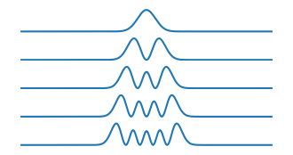

Scientific Computing - Applications to Quantum
Questions
- Can Dask be used for embarassingly parallel problems?
- How do you apply it to real functions?
Objectives
- Learn about dask delayed
- Apply delayed to real problems
- Learn to profile code
In this example we will explore the Schrodinger equation, and how we can use dask for an embarassingly parallel problem.
See here for similar problems: https://github.com/natsunoyuki/Computational_Physics_in_Python
# Import the packages we need
import numpy as np
import matplotlib.pyplot as plt
from scipy import sparse
from scipy.sparse import linalg as sla
import timeDefine a “computationally intensive” function. Here we are solving for the eigenvalues of \({\displaystyle i\hbar {\frac {d}{dt}}\vert Ψ (t)\rangle ={\hat {H}}\vert Ψ (t)\rangle }\)
def schrodinger1D(Vfun):
"""
Solves the 1 dimensional Schrodinger equation numerically
------ Inputs ------
Vfun: function, potential energy function
------- Returns -------
evl: np.array, eigenvalues
evt: np.array, eigenvectors
x: np.array, x axis values
------- Params to set -------
xmin: minimum value of the x axis
xmax: maximum value of the x axis
Nx: number of finite elements in the x axis
neigs: number of eigenvalues to find
"""
xmin = -10
xmax = 10
Nx = 250
neigs = 5
# for this code we are using Dirichlet Boundary Conditions
x = np.linspace(xmin, xmax, Nx) # x axis grid
dx = x[1] - x[0] # x axis step size
# Obtain the potential function values:
V = Vfun(x)
# create the Hamiltonian Operator matrix:
H = sparse.eye(Nx, Nx, format = "lil") * 2
for i in range(Nx - 1):
H[i, i + 1] = -1
H[i + 1, i] = -1
H = H / (dx ** 2)
# Add the potential into the Hamiltonian
for i in range(Nx):
H[i, i] = H[i, i] + V[i]
# convert to csc matrix format
H = H.tocsc()
# obtain neigs solutions from the sparse matrix
[evl, evt] = sla.eigs(H, k = neigs, which = "SM")
for i in range(neigs):
# normalize the eigen vectors
evt[:, i] = evt[:, i] / np.sqrt(
np.trapz(np.conj(
evt[:, i]) * evt[:, i], x))
# eigen values MUST be real:
evl = np.real(evl)
return evl, evt, xDefine a function to plot H.
def plot_H(H,neigs=5):
evl = H[0] # energy eigen values
indices = np.argsort(evl)
print("Energy eigenvalues:")
for i,j in enumerate(evl[indices]):
print("{}: {:.2f}".format(i + 1, j))
evt = H[1] # eigen vectors
x = H[2] # x dimensions
i = 0
plt.figure(figsize = (4, 2))
while i < neigs:
n = indices[i]
y = np.real(np.conj(evt[:, n]) * evt[:, n])
plt.subplot(neigs, 1, i+1)
plt.plot(x, y)
plt.axis('off')
i = i + 1
plt.show()Define some potenial energy functions we want to explore.
def Vfun1(x, params=[1]):
'''
Quantum harmonic oscillator potential energy function
'''
V = params[0] * x**2
return V
def Vfun2(x, params = 1e10):
'''
Infinite well potential energy function
'''
V = x * 0
V[:100]=params
V[-100:]=params
return V
def Vfun3(x, params = [-0.5, 0.01, 7]):
'''
Double well potential energy function
'''
A = params[0]
B = params[1]
C = params[2]
V = A * x ** 2 + B * x ** 4 + C
return V
## Plot these with
# x = np.linspace(-10, 10, 100)
# plt.plot(Vfun1(x))Let’s get an idea for how long our schrodinger equation takes to solve.
%%time
H = schrodinger1D(Vfun1)plot_H(H)Energy eigenvalues: 1: 1.00 2: 3.00 3: 4.99 4: 6.99 5: 8.98 
Let’s profile this function. Is there any way we can speed it up? Or apply some of the techniques we have learned? We can use the iPython/Jupyter magic command %%prun which uses cProfile.
TLDR: maybe not! Not all code can be “dasked” or parallelised easily.
%%prun -s cumulative -q -l 10 -T profile.txt
H = schrodinger1D(Vfun1) 51234 function calls (51201 primitive calls) in 243.228 seconds
Ordered by: cumulative time
List reduced from 214 to 10 due to restriction <10>
ncalls tottime percall cumtime percall filename:lineno(function)
1 0.000 0.000 243.228 243.228 {built-in method builtins.exec}
1 0.000 0.000 243.228 243.228 <string>:1(<module>)
1 0.003 0.003 243.227 243.227 3456611332.py:13(schrodinger1D)
1 0.303 0.303 243.196 243.196 arpack.py:1096(eigs)
876 240.090 0.274 242.492 0.277 arpack.py:719(iterate)
875 0.121 0.000 2.402 0.003 _interface.py:201(matvec)
875 0.107 0.000 2.173 0.002 _interface.py:189(_matvec)
875 0.205 0.000 2.059 0.002 _interface.py:303(matmat)
875 0.008 0.000 1.852 0.002 _interface.py:730(_matmat)
875 0.104 0.000 1.844 0.002 _base.py:400(dot)Okay. There may not be anything we can improve of greatly. The slowest part is a highly optimised scipy subroutine that is calling fortran under-the-hood! So what if we wanted to run this function 2 times, 3 times, a million times? Perhaps trying different configuration parameters, or specifically here, different potential energy functions.
# The slow way: Loop through each of the PE definitions
# and run the function one at a time.
H = []
for f in [Vfun1,Vfun2,Vfun3] :
tic = time.time()
result = schrodinger1D(f)
print(time.time() - tic, "s for", f)
print("{:.4f}s for {}".format(time.time()-tic, f))
H.append(result)
# plot_H(H[0])
# plot_H(H[1])
# plot_H(H[2])Dask Delayed
Now let’s try and solve the three variations in parallel. This is an embarassingly parallel problem, as each operation is completely seperate from the other.
import dask%%time
lazy_H = []
for f in [Vfun1,Vfun2,Vfun3]:
H_temp = dask.delayed(schrodinger1D)(f)
lazy_H.append(H_temp)lazy_H%%time
HH = dask.compute(*lazy_H)Done! That is it. You can now run the schrodinger1D as many times as you like in parallel and dask will take of distributing out the work to as many cpus as it can gets its threads on!
Challenge 1
Can you modify some of the parameters in the schrodinger1D function and see how the timing changes?
Solution
Try changing the xmin, xmax, and Nx parameter. These adjust the resolution of the model. You can quickly see how you may want to parallelise this code as each numerical solution can take a long time at high-resolutions.
xmin = -100
xmax = 100
Nx = 500Then re-run with
%%time
H = schrodinger1D(Vfun1)Exercise 1 Multiple inputs
Can you re-write the the schrodinger1D function to accept “params” as an argument, then run multiple parameter configurations with a single Potential Energy function?
Step 1
Modify the schrodinger1D function to accept an additional argument, and pass that argument to the Vfun call.
#Need to change line 1
def schrodinger1D(Vfun, params):
...
# And change line 29
V = Vfun(x, params = params)Step 2
Choose the Vfun you want to explore, and make a list of parameters we want to sweep. I will be looking at Vfun3. A way to make a set of params is to use the product function from the itertools package.
import itertools
param_config = [[-1,0,1],[-1,0,1],[-1,0,1]]
params=list(map(list, itertools.product(*param_config)))
print(params)[-1, -1, -1]
[-1, -1, 0]
[-1, -1, 1]
[-1, 0, -1]
[-1, 0, 0]
[-1, 0, 1]
[-1, 1, -1]
[-1, 1, 0]
[-1, 1, 1]
[0, -1, -1]
[0, -1, 0]
[0, -1, 1]
[0, 0, -1]
[0, 0, 0]
[0, 0, 1]
[0, 1, -1]
[0, 1, 0]
[0, 1, 1]
[1, -1, -1]
[1, -1, 0]
[1, -1, 1]
[1, 0, -1]
[1, 0, 0]
[1, 0, 1]
[1, 1, -1]
[1, 1, 0]
[1, 1, 1]Step 3
Re-write the dask delayed function to include your new paramaters.
%%time
lazy_H = []
for param in params:
print(params)
H_temp = dask.delayed(schrodinger1D)(Vfun3, param)
lazy_H.append(H_temp)
lazy_H.compute()
Exercise 2 Multiprocessing vs Dask
How do you implement this same functionality in native Python Multiprocessing?
Solution
The answer looks something like this:
with Pool(processes=ncpus) as pool:
y=pool.imap(schrodinger1D, [Vfun1,Vfun2,Vfun3])
pool.close()
pool.join()
outputs = [result for result in y]See the complete solution and description here: schrodinger1D.py
Key points
- Dask can be used for embarassingly parallel problems.
- Finding where to make your code faster and understanding what kind of code/data you can determine which approaches you use.